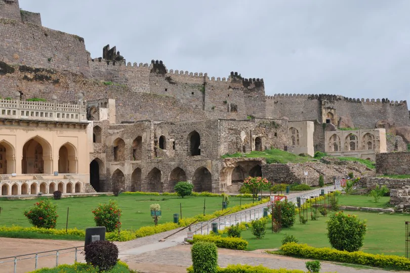
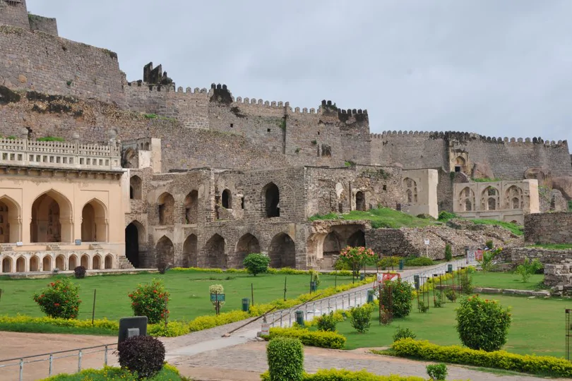
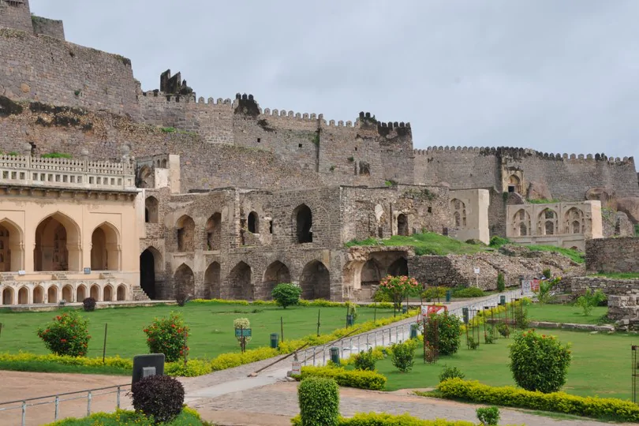
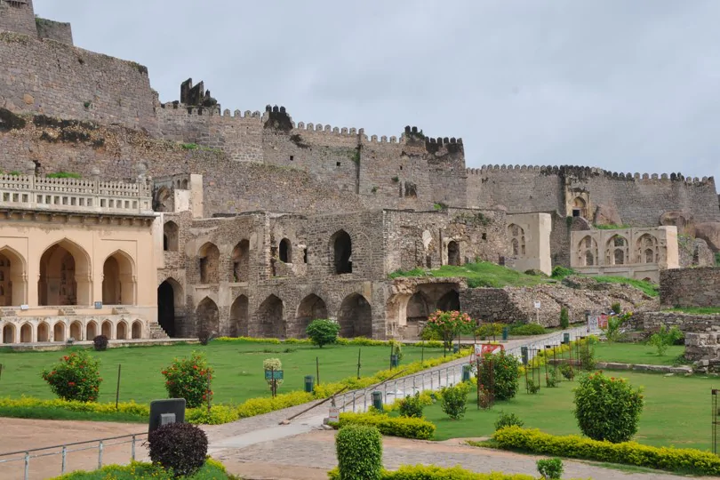

Hyderabad
.jpg)
.jpg) 

.jpg)
.jpg) 

The city of smiles, of lights, of a thousand faces, endearingly called the Pearl City, Hyderabad offers a variety of tourist attractions ranging from Heritage monuments, Lakes and Parks, Gardens and Resorts, Museums to delectable cuisine and a delightful shopping experience. To the traveller, Hyderabad offers a fascinating panorama of the past, with a richly mixed cultural and historical tradition spanning 400 colourful years. Some of the tourist attractions include.
The Charminar is as much the signature of Hyderabad as the Taj Mahal is of Agra or the Eiffel Tower is of Paris. Mohammed Quli Qutb Shah, the founder of Hyderabad, built Charminar in 1591 at the centre of the original city layout. It is said to be built as a charm to ward off a deadly epidemic raging at that time. Four graceful minarets soar to a height of 48.7 m above the ground. Charminar has 45 prayer spaces and a mosque in it. Visitors can view the architectural splendour inside the Charminar. The monument is illuminated in the evenings and a pedestrianisation project around the monument is under implementation.
Mecca Masjid : A two hundred yards southwest of the Charminar is the Mecca Masjid, so named because the bricks were brought from Mecca to build the central arch. The Qutb Shahis never finished the building of the mosque, which was completed by Aurangzeb in 1694.
Laad Baazar : This is famous, colourful shopping centre of the old city, tucked away in one of the streets leading off from Charminar. Bridal wear, Pearls and the traditional Hyderabadi glass and stone studded bangles are sold here.
Golconda is one of the famous forts of India. The name originates from the Telugu words "Golla Konda" meaning "Shepherd's Hill". The origins of the fort can be traced back to the Yadava dynasty of Deogiri and the Kakatiyas of Warangal. Golconda was originally a mud fort, which passed to the Bahmani dynasty and later to the Qutb Shahis, who held it from 1518 to 1687 A.D. The first three Qutb Shahi kings rebuilt Golconda, over a span of 62 years. The fort is famous for its acoustics, palaces, ingenious water supply system and the famous Fateh Rahben gun, one of the cannons used in the last siege of Golconda by Aurangzeb, to whom the fort ultimately fell.
Excavated in 1562 A.D. by Hussain Shah Wali during the time of Ibrahim Quli Qutb Shah, the lake
has a promenade that is a busy thoroughfare today. Boating and water sports are a regular
feature in the Hussainsagar. One of the World's tallest monolithic statues of the Buddha
stands on the 'Rock of Gibraltar', in the middle of the lake. Added to all these, AP Tourism
has additional boating facilities like speed boats, motor boats, 48 seater launch etc.
Starlit dinner on-board and private parties also can be arranged on the Launch.
Surroundings of Hussainsagar Lake provide marvellous entertainment options like NTR Gardens,
Necklace Road, Tank Bund, Prasads Multiplex, Lumbini Park, Sanjeevaiah Park etc.,
The loudest, craziest, and the most amazing part of town. This simply is not just an amusement park in Hyderabad, but a world of breath-taking charm. It’s a place to celebrate the smaller moments and share big wonders. Get on one of the 40+ exhilarating rides, or simply laze by the pool under the bright sun. But whatever you do, here, everybody gets a little closer. And that is why we are the best Amusement Park in Hyderabad.